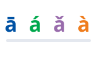
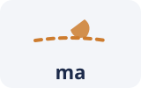
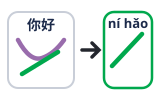
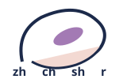

01四声 · The four tones妈麻马骂
妈 mā · 麻 má · 马 mǎ · 骂 mà — one syllable, four different words.
mā mother · má hemp · mǎ horse · mà to scold. The tone changes the word.
ម៉ា ទាំងបួនសូរ៖ mā ម្ដាយ · má ស្ពៃ · mǎ សេះ · mà ចំហាល។
Tones First — the fast track starts here · Four tones, one syllable, instant Chinese
Mandarin uses pitch to tell words apart, so tones are not decoration — they ARE the word. Learn the four contours on one syllable and you can pronounce any pinyin you ever meet.

ā á ǎ àThe mark above the vowel is the tone
吗 maNeutral tone: short and lightHear the four tones on one syllable, glue them into real pairs, fix the sounds English doesn't have, then speak full sentences.
Space listen · ← → move · K show text
妈 mā · 麻 má · 马 mǎ · 骂 mà — one syllable, four different words.
mā mother · má hemp · mǎ horse · mà to scold. The tone changes the word.
ម៉ា ទាំងបួនសូរ៖ mā ម្ដាយ · má ស្ពៃ · mǎ សេះ · mà ចំហាល។
吗 ma 是轻声：又短又轻。
The neutral tone (ma) is short and light — no mark above the vowel.
សូរខ្សោយ ma ខ្លី និងស្រាល។

两个第三声连在一起，第一个读第二声：你好 → ní hǎo。
When two third tones meet, the first becomes a second: 你好 is read 'ní hǎo'.
បើសូរទី៣ ពីរជួបគ្នា សូរទីមួយ អានជាសូរទី២។

zh、ch、sh、r：舌尖卷起来，靠近上颚。
For zh, ch, sh and r curl the tip of your tongue up toward the roof of your mouth.
សម្រាប់ zh ch sh r ងូញអណ្តាតឡើងលើ។
中文句子和英语一样：主语 + 动词 + 宾语，动词不变。
Chinese word order is Subject + Verb + Object like English — and verbs never change form.
ប្រយោគចិន៖ មេរៀន + កិរិយាសព្ទ + វត្ថុ ដូចភាសាអង់គ្លេស ហើយកិរិយាសព្ទមិនប្តូរទេ។
陈述句 + 吗 = 一般疑问句：你喜欢咖啡 → 你喜欢咖啡吗？
Add 吗 to the end of any statement and it becomes a yes/no question.
ដាក់ ma នៅចុងប្រយោគ ក្លាយជាសំណួរ បាទ/ចាស។
Sources: Yoyo Chinese — What is Pinyin? (yoyochinese.com/pinyin) and Beginner Courses Glossary PDF (cdn.yoyochinese.com); Chinese Zero to Hero — Tones Matter (chinesezerotohero.com). Khmer support checked against the Wikivoyage Khmer phrasebook. Verified 2026-11-09.
Recall the answer in your head first, then tap to check and listen.
不行。妈、马不一样；声调错了，意思就变了。
No. mā (mother) and mǎ (horse) are different words — wrong tone, wrong meaning.
មិនបានទេ។ mā ម្ដាយ និង mǎ សេះ ជាពាក្យខុសគ្នា។
Tones are part of the word itself, like a letter. Learners who skip them speak years without being understood.
大多数时候能听懂。别怕，先开口，慢慢就准了。
Usually yes — context carries you. Speak first; accuracy comes with practice.
ភាគច្រើន គេយល់។ កុំខ្លាច គ្រាន់តែនិយាយមុន។
Native listeners use context constantly. Perfection is not the gate to conversation — speaking is.
不用。口语用拼音就能开始，汉字可以慢慢来。
No. For speaking, pinyin is enough to start; learn characters slowly in parallel.
មិនចាំបាច់ទេ។ សម្រាប់និយាយ pinyin គ្រប់គ្រាន់ដើម្បីចាប់ផ្តើម។
The fast track is sound-first: pinyin + tones + phrases. Characters pay off later, for reading.
每天十五分钟，比一周一次两小时有效。
Fifteen focused minutes every day beats two hours once a week.
ប្រាំមួយនាទីរាល់ថ្ងៃ ល្អជាងពីរម៉ោងមួយសប្តាហ៍។
对英语母语者，第二声和第三声最容易混。多听对比。
For English speakers, tones 2 and 3 blur together most. Drill them as minimal pairs.
សម្រាប់អ្នកនិយាយអង់គ្លេស សូរទី២ និងទី៣ ពិបាកជាងគេ។
សូមនិយាយយឺតៗបន្តិច។
ពាក្យនេះ មានន័យថាអ្វី?
ខ្ញុំ និយាយ មិនទាន់ បាន ទេ។
他喜欢茶。我们学习中文。
He likes tea. We study Chinese. The verb never changes.
គាត់ ចូលចិត្ត តែ។ យើង រៀន ភាសាចិន។
你喜欢茶吗？——喜欢 / 不喜欢。
Do you like tea? — Yes (like) / No (don't like). Answer with the verb itself.
តើ អ្នក ចូលចិត្ត តែ ទេ? — ចូលចិត្ត / មិន ចូលចិត្ត។
我不是老师。他不去。
I'm not a teacher. He doesn't go. 不 sits right before the verb.
ខ្ញុំ មិន មែន គ្រូ ទេ។ គាត់ មិន ទៅ ទេ។
Tap a word's play button to hear it. Hide one side, then recall it before you tap to check.
妈 mā · 麻 má · 马 mǎ · 骂 mà — one syllable, four different words. 吗 ma 是轻声：又短又轻。
mā mother · má hemp · mǎ horse · mà to scold. The tone changes the word. The neutral tone (ma) is short and light — no mark above the vowel.
两个第三声连在一起，第一个读第二声：你好 → ní hǎo。
When two third tones meet, the first becomes a second: 你好 is read 'ní hǎo'.
zh、ch、sh、r：舌尖卷起来，靠近上颚。
For zh, ch, sh and r curl the tip of your tongue up toward the roof of your mouth.
中文句子和英语一样：主语 + 动词 + 宾语，动词不变。 陈述句 + 吗 = 一般疑问句：你喜欢咖啡 → 你喜欢咖啡吗？
Chinese word order is Subject + Verb + Object like English — and verbs never change form. Add 吗 to the end of any statement and it becomes a yes/no question.
Q. 可以不学声调，只学拼音吗？
Q. Can I skip tones and just learn pinyin?
A. 不行。妈、马不一样；声调错了，意思就变了。
A. No. mā (mother) and mǎ (horse) are different words — wrong tone, wrong meaning.
មិនបានទេ។ mā ម្ដាយ និង mǎ សេះ ជាពាក្យខុសគ្នា។
Q. 声调说错了，别人听得懂吗？
Q. If I get a tone wrong, will people understand me?
A. 大多数时候能听懂。别怕，先开口，慢慢就准了。
A. Usually yes — context carries you. Speak first; accuracy comes with practice.
ភាគច្រើន គេយល់។ កុំខ្លាច គ្រាន់តែនិយាយមុន។
Q. 要先会汉字才能开口说吗？
Q. Do I need characters before I can speak?
A. 不用。口语用拼音就能开始，汉字可以慢慢来。
A. No. For speaking, pinyin is enough to start; learn characters slowly in parallel.
មិនចាំបាច់ទេ។ សម្រាប់និយាយ pinyin គ្រប់គ្រាន់ដើម្បីចាប់ផ្តើម។
Q. 每天练多久，进步最快？
Q. How long per day is the fastest progress?
A. 每天十五分钟，比一周一次两小时有效。
A. Fifteen focused minutes every day beats two hours once a week.
ប្រាំមួយនាទីរាល់ថ្ងៃ ល្អជាងពីរម៉ោងមួយសប្តាហ៍។
Q. 哪个声调最难？
Q. Which tone is the hardest?
A. 对英语母语者，第二声和第三声最容易混。多听对比。
A. For English speakers, tones 2 and 3 blur together most. Drill them as minimal pairs.
សម្រាប់អ្នកនិយាយអង់គ្លេស សូរទី២ និងទី៣ ពិបាកជាងគេ។
请说慢一点儿。
Please speak a little slower.
这个词是什么意思？
What does this word mean?
我还不会说。
I can't say that yet.
문G. 我喜欢咖啡。
문G. Pattern: Subject + Verb + Object — 'I like coffee.'
A. 他喜欢茶。我们学习中文。
A. He likes tea. We study Chinese. The verb never changes.
គាត់ ចូលចិត្ត តែ។ យើង រៀន ភាសាចិន។
문G. 你喜欢咖啡吗？
문G. Pattern: statement + 吗 = yes/no question.
A. 你喜欢茶吗？——喜欢 / 不喜欢。
A. Do you like tea? — Yes (like) / No (don't like). Answer with the verb itself.
តើ អ្នក ចូលចិត្ត តែ ទេ? — ចូលចិត្ត / មិន ចូលចិត្ត។
문G. 我不喜欢茶。
문G. Pattern: put 不 before the verb to say no.
A. 我不是老师。他不去。
A. I'm not a teacher. He doesn't go. 不 sits right before the verb.
ខ្ញុំ មិន មែន គ្រូ ទេ។ គាត់ មិន ទៅ ទេ។
Sources: Yoyo Chinese — What is Pinyin? (yoyochinese.com/pinyin) and Beginner Courses Glossary PDF (cdn.yoyochinese.com); Chinese Zero to Hero — Tones Matter (chinesezerotohero.com). Khmer support checked against the Wikivoyage Khmer phrasebook. Verified 2026-11-09.
Say it in your head first, then tap the box to check.